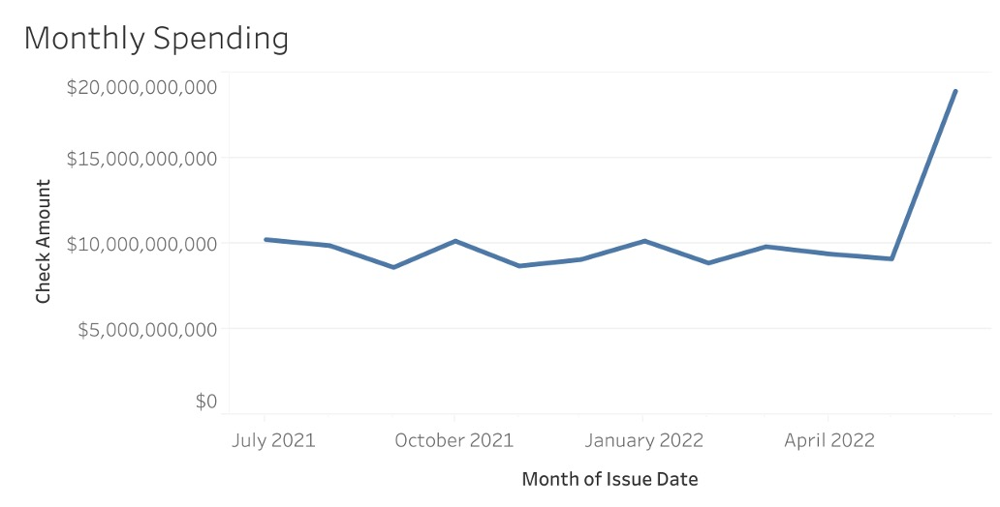
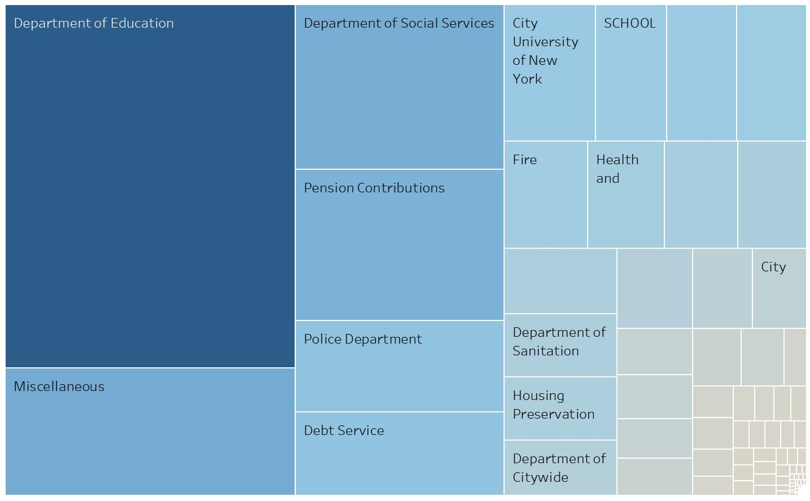
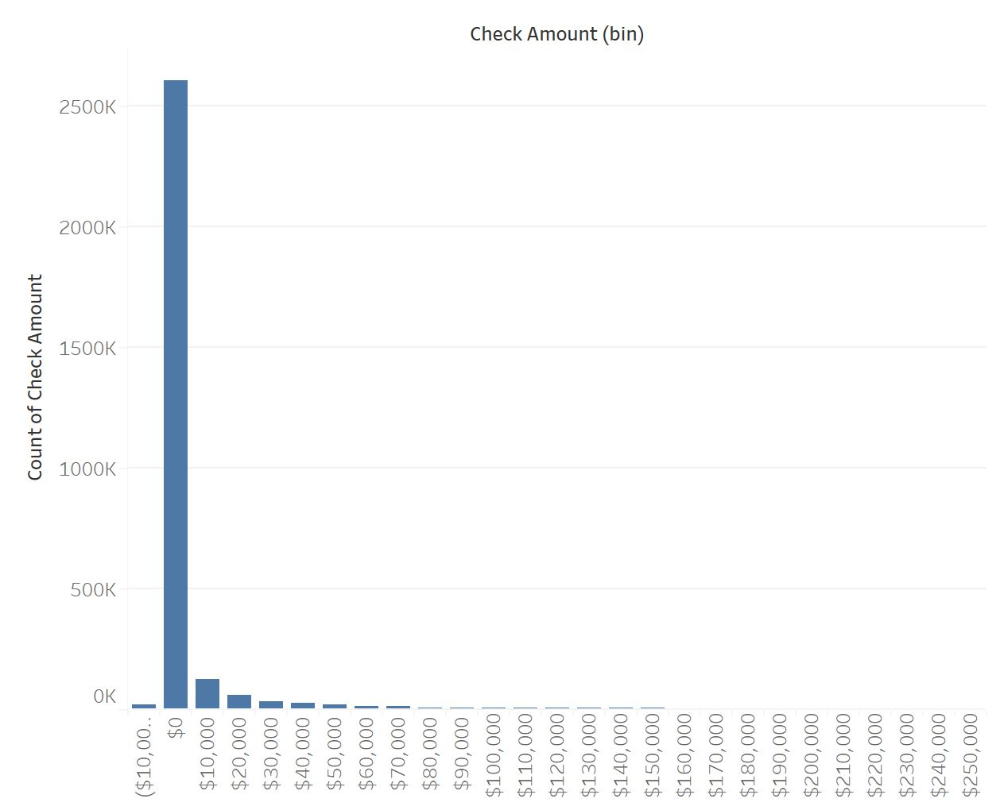
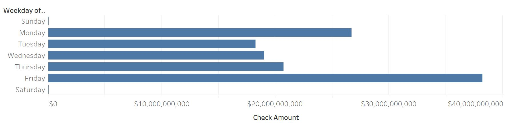
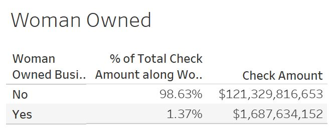
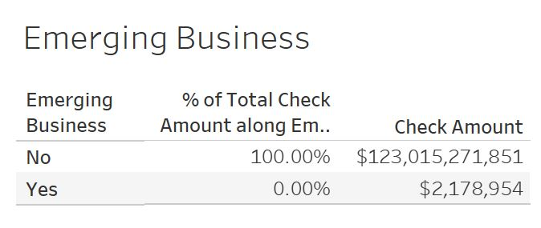

Selected key variables from website for download.
Agency, Check Amount, Department, Emerging Business, Expense Category, Industry, Issue Date, Spending Category, Woman Owned Business
Link to My Visualizations: Tableau.
Charts in dashboard can be used to filter the dashboard. This dashboard allows the user to filter to areas that they are interested in. This allows exploration of NYC trends.
New York City provides a dataset of their financial activity for transparency purposes. This dataset shows spending by the New York City government. Dataset has a large number of records and lends well to visualization.
Interested in seeing what a city budget may be spent on and what the overall distribution of spending would look like. The dataset also included timestamps of each payment which allows for views over time to be completed.
Data Source: Checkbook NYC Datafeeds
Agency, Check Amount, Department, Emerging Business, Expense Category, Industry, Issue Date, Spending Category, Woman Owned Business
3,026,323
Used Tableau to append the 7 separate files into one table by creating a union.
Updated data formatting
June has considerably higher spending than other months. This may be expected as it is the last month in the fiscal calendar.
Top 2 spending categories are contracts and payroll

Department of Education is the departement with highest spend. A large amount of spend is classified as a miscellaneous departement.
Spending is skewed to the right based on most transactions being for small amounts.
Fridays are the date with highest spending. Weekends have significantly lower spending.
Less than 1% is paid to emerging businesses. 1.37% of spending is paid to Women owned businesses.
 